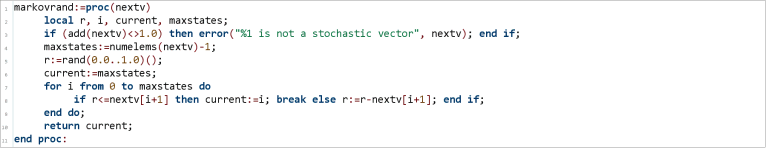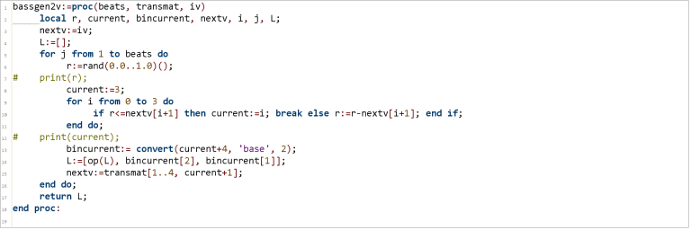
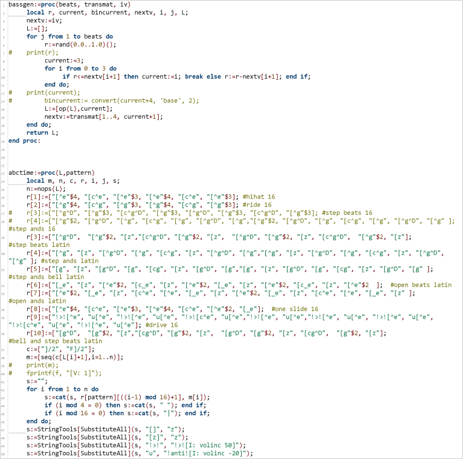
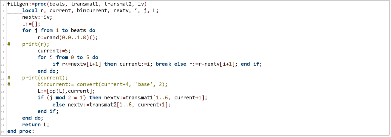
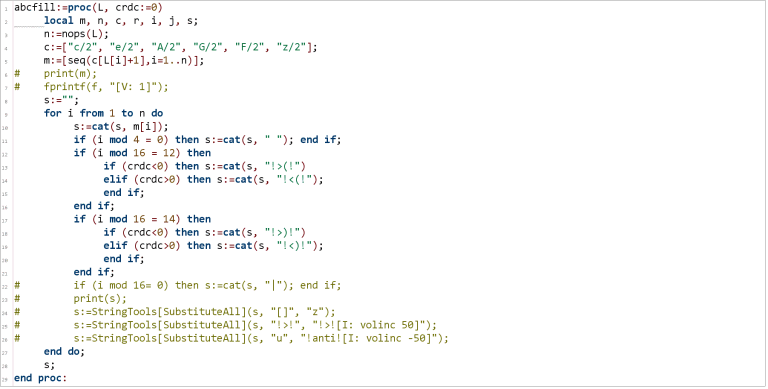
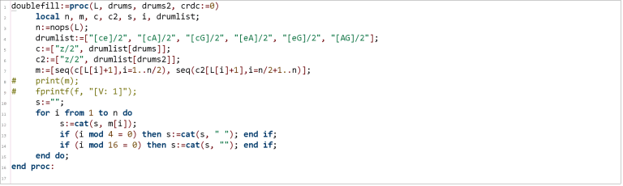
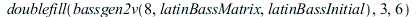
| 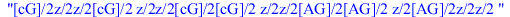 | (1) |
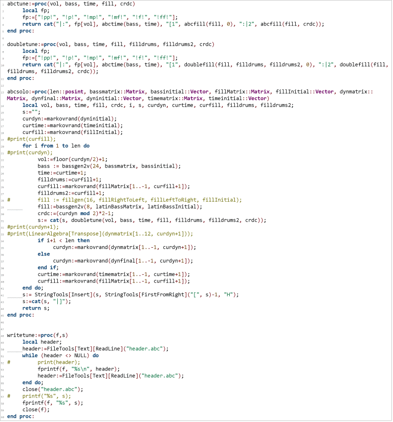
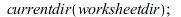
| (2) |

| 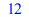 | (3) |
![funkBassmatrix := rtable(1 .. 4, 1 .. 4, [[.1, `/`(1, 3), .25, .5], [.3, `/`(1, 3), .25, .5], [.3, `/`(1, 3), .25, 0], [.3, 0, .25, 0]], subtype = Matrix); -1; funkBassinitial := `<,>`(.1, .1, .4, .4)...](images/markovlatindouble-abc_15.gif)
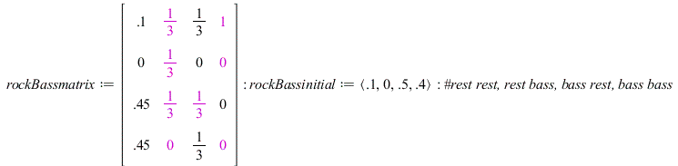`(..." align="center" border="0">
![funkFillRightToLeft := rtable(1 .. 6, 1 .. 6, [[.4, .2, .1, .1, .3, .2], [.2, .4, .2, .2, .2, .2], [.1, 0, .4, .1, .1, .2], [0, .1, .1, .4, .1, .2], [.2, .1, .1, .1, .2, .1], [.1, .2, .1, .1, .1, .1]]...](images/markovlatindouble-abc_17.gif)

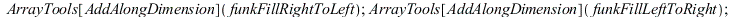
| 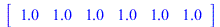 | |
| (4) |
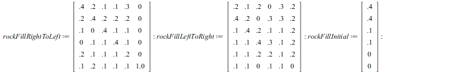

| (5) |
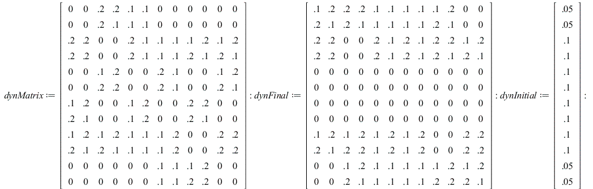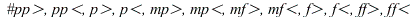
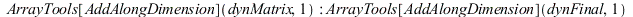
| (6) |

| 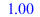 | (7) |
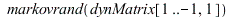
| (8) |
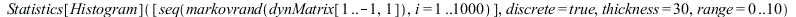
| 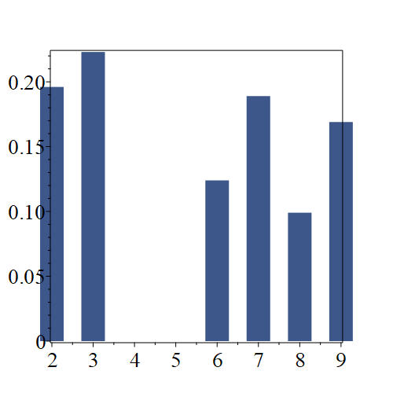 |
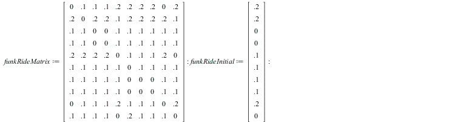
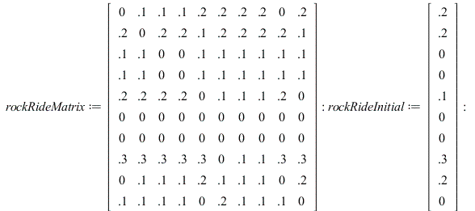
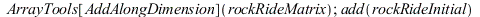
| 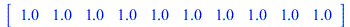 | |
| (9) |
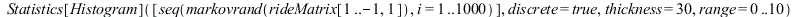
| 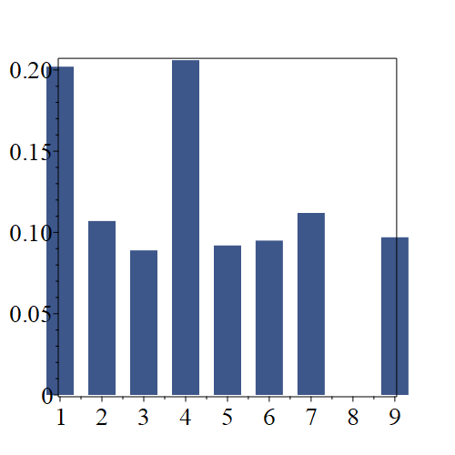 |
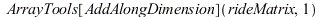
| (10) |

| (11) |

| 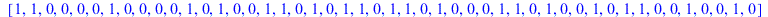 | (12) |
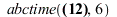
| (13) |
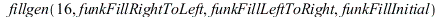
| (14) |
| 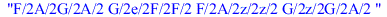 | (15) |
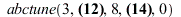
| (16) |
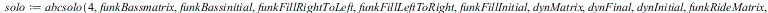
| (17) |
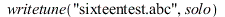
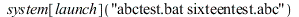
| 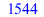 | (18) |
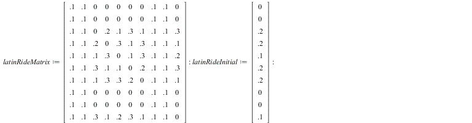
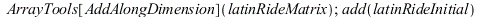
| (19) |
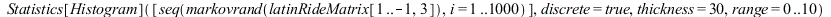
| 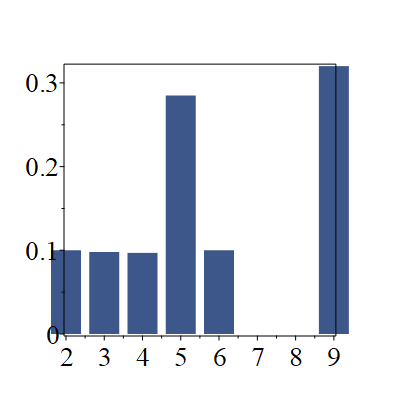 |
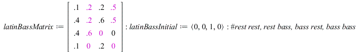`(0, 0, 1, 0); -1" align="center" border="0">
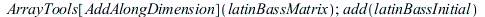
| 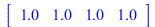 | |
| (20) |

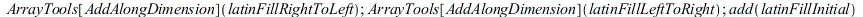
| (21) |
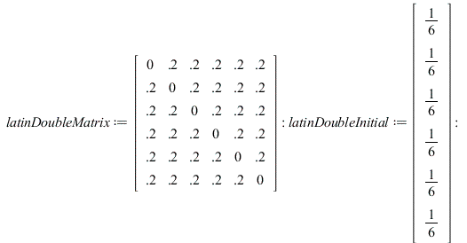
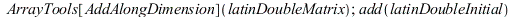
| (22) |
| (23) |
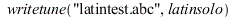
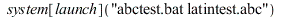
| (24) |